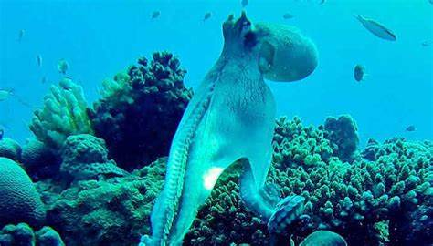
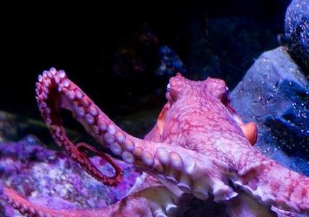
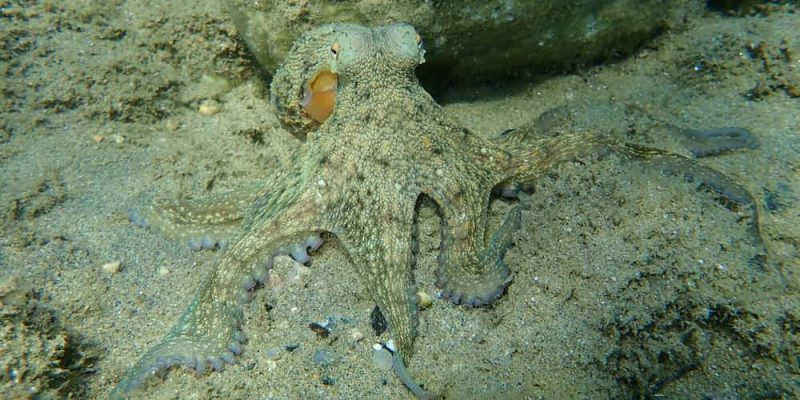
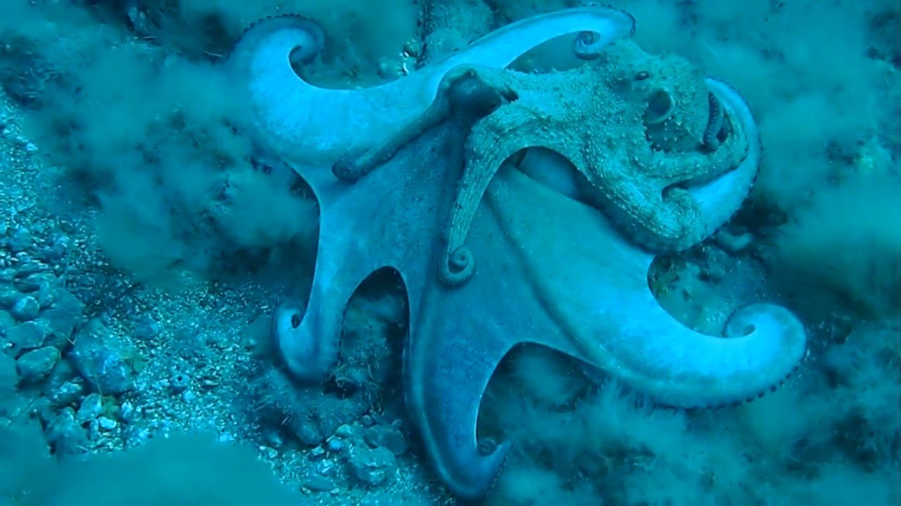

El genio de los océanos
El pulpo es uno de los invertebrados más fascinantes del mundo marino. Con su cuerpo blando, ocho brazos y una inteligencia sorprendente, es capaz de resolver problemas, camuflarse y escapar de depredadores con gran habilidad. Habita en todos los océanos, desde arrecifes tropicales hasta profundidades abisales.
Estilo de vida y relaciones sociales

Los pulpos son animales solitarios y territoriales. Pasan la mayor parte del tiempo escondidos en cuevas o grietas, saliendo solo para cazar o explorar. Utilizan su capacidad de camuflaje para evitar depredadores y sorprender a sus presas. Aunque no forman grupos sociales, pueden interactuar brevemente durante la reproducción.
Dieta y alimentación
Los pulpos son carnívoros y se alimentan principalmente de crustáceos, peces y moluscos. Utilizan sus brazos y ventosas para atrapar a sus presas y su pico córneo para romper conchas. Son cazadores nocturnos y pueden cambiar de color y textura para acercarse sigilosamente a su alimento.
Habilidades y características

El pulpo es famoso por su inteligencia: puede abrir frascos, resolver laberintos y aprender observando. Su cuerpo flexible le permite pasar por aberturas muy pequeñas. Además, puede liberar tinta para confundir a los depredadores y escapar rápidamente. Su piel cambia de color y textura gracias a células especiales llamadas cromatóforos.
Esperanza de vida y amenazas
La vida de los pulpos es corta, generalmente entre 1 y 3 años. Sus principales amenazas son los depredadores naturales como tiburones, morenas y peces grandes, así como la pesca y la contaminación marina. A pesar de su inteligencia, la mayoría muere poco después de reproducirse, ya que las hembras cuidan los huevos hasta el final de su vida.
Reproducción y vínculos familiares
